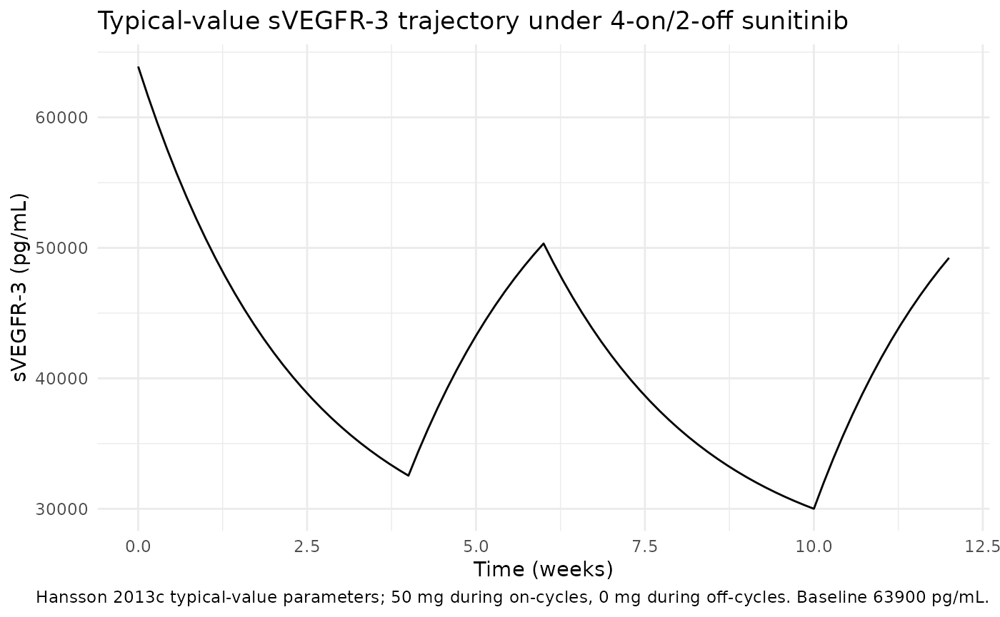
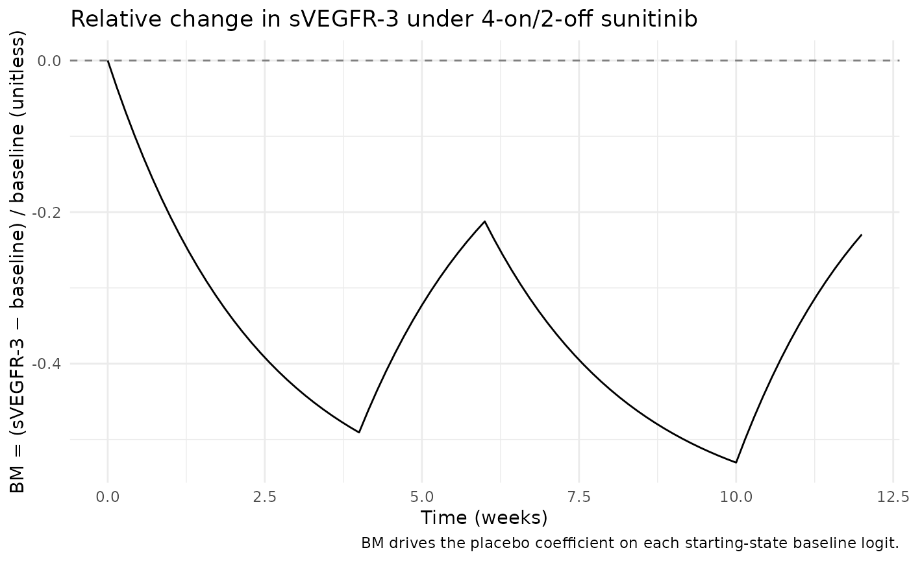
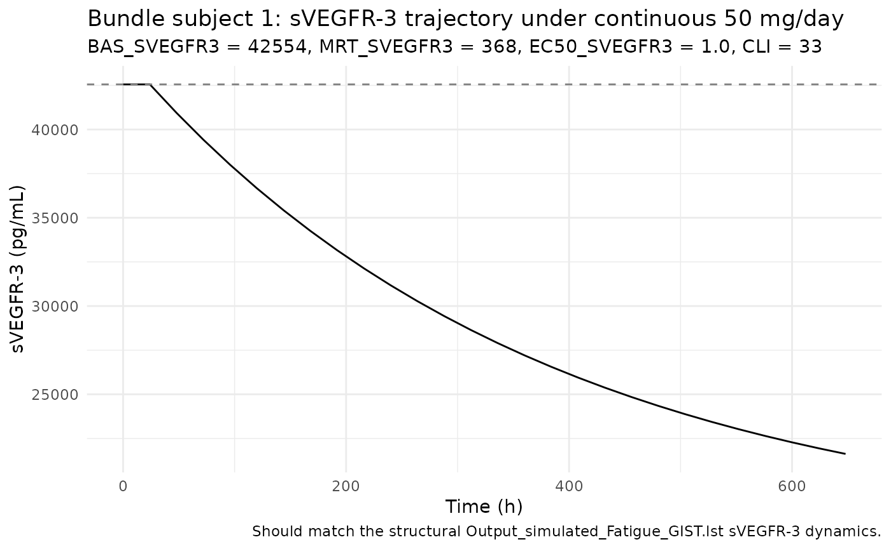

Sunitinib (Hansson 2013c)
Source:vignettes/articles/Hansson_2013c_sunitinib.Rmd
Hansson_2013c_sunitinib.RmdModel and source
- Citation: Hansson EK, Ma G, Amantea MA, French J, Milligan PA, Friberg LE, Karlsson MO. PKPD modeling of predictors for adverse effects and overall survival in sunitinib-treated patients with GIST. CPT Pharmacometrics Syst Pharmacol 2013;2(11):e85.
- Article: doi:10.1038/psp.2013.62
- DDMORE Foundation Model Repository: DDMODEL00000222
- Upstream sVEGFR-3 biomarker dynamics:
Hansson_2013a_sunitinib(DDMODEL00000197, doi:10.1038/psp.2013.61).
The publication PDF was not on disk at extraction time, so all
parameter values, equations, and the model structure are taken from the
DDMORE bundle (Executable_Fatigue_GIST.mod and
Output_real_Fatigue_GIST.lst_Fatigue_PSP_2014). Validation
in this vignette therefore consists of a mechanistic-sanity check (F.3)
plus a self-consistency simulation against the bundle’s shipped
simulated dataset (F.2); a side-by-side comparison against any published
Hansson 2013 figure or table is not performed.
Population
The Hansson 2013c fatigue model fits the per-visit fatigue-grade data
(NCI-CTC v3 grades 0 = none, 1 = mild, 2 = moderate, 3+ = severe or
worse) collected from the same Phase III multinational sunitinib trial
in adults with imatinib-resistant gastrointestinal stromal tumours
(GIST) that supplied the upstream Hansson 2013a biomarker fit and the
companion 2013 overall-survival paper. Subjects received sunitinib 50 mg
PO QD on a 4-weeks-on / 2-weeks-off schedule with a placebo-controlled
run-in. The DDMORE bundle does not expose detailed baseline demographics
(age, weight, sex, race, prior-imatinib duration); the linked
publication (CPT Pharmacometrics Syst Pharmacol 2013;2:e85) was not on
disk in the extraction environment, so the population
metadata records that gap and carries n_subjects = 303 over
from the upstream Hansson 2013a model. The fatigue analysis-set count is
not derivable from the bundle.
The same information is available programmatically via the model’s
population metadata
(readModelDb("Hansson_2013c_sunitinib")$population after
the model is loaded — note that readModelDb returns the
model function, so call the function to materialise the
model and inspect attributes via the
Hansson_2013c_sunitinib() body).
Source trace
All parameter values come from the
Output_real_Fatigue_GIST.lst_Fatigue_PSP_2014 listing’s
FINAL PARAMETER ESTIMATE block
(post-MINIMIZATION SUCCESSFUL); the bundle’s
Executable_Fatigue_GIST.mod is a MAXEVAL=0
evaluation-run scaffold whose $THETA / $OMEGA
initial values are deliberately set to placeholder values (e.g. TH4 =
-2.78, OMEGA(i,i) = 0.01) and not the published
estimates. Equations come from the .mod’s $PK
/ $DES / $ERROR blocks — equivalent to the
listing’s full-fit .mod header except for an unused
effect-compartment relic that does not feed the EFF3 expression
(commented-out DRG0/DRG1/DRG2/DRG3 lines).
.lst <-> bundle .mod THETA mapping:
the listing’s run had 17 thetas (TH13 = KEO FIXED 0.422 — an unused
effect-compartment relic; TH14-TH17 = PX0..PX3 placebo coefficients).
The bundle .mod has 16 thetas with no KEO slot, so the
bundle’s TH13-TH16 are the listing’s TH14-TH17. The structural sVEGFR-3
model (EFF3 = AUC/(EC53+AUC) with AUC = DOSE/CL) is identical in
both.
| Equation / parameter | Source location (DDMODEL00000222) |
|---|---|
| sVEGFR-3 indirect-response turnover (1 ODE compartment) |
.mod $DES line
DADT(1) = KIN3*(1-EFF3)-KOUT3*A(1)
|
auc <- DOSE / CLI |
.mod $PK line
AUC = DOSE/CL
|
eff3 <- auc / (EC50_SVEGFR3 + auc) |
.mod $DES line
EFF3 = EMAX*AUC/(EC53+AUC) (EMAX = 1 fixed) |
kout3 <- 1 / MRT_SVEGFR3,
kin3 <- BAS_SVEGFR3 * kout3
|
.mod $PK lines
KOUT3 = 1/MRT3, KIN3 = BAS3*KOUT3
|
svegfr3(0) <- BAS_SVEGFR3 |
.mod $PK line
A_0(1) = BAS3
|
bm <- (svegfr3 - BAS_SVEGFR3) / BAS_SVEGFR3 |
.mod $ERROR line
BM = ((VE3-BAS3)/BAS3)
|
e_bm_px<i> * bm (placebo on baseline logit) |
.mod $ERROR lines
VE30 = THETA(13)*BM, VE31 = THETA(14)*BM,
… |
| Per-state proportional-odds Markov logits |
.mod $ERROR lines
B10 = THETA(1) + VE30 + ETA(1), etc. |
| Cumulative-logit reparameterisation | nlmixr2 deviation from the .mod’s B1 + B2 + B3 form (see Assumptions) |
Conditional Y = P_xy per (PDV, DV) |
.mod $ERROR block lines after
;----PX0 (Markov + PO likelihood) |
clge1_px0 = -5.85 (PX0 grade>=1 cumulative logit,
drug-free) |
Output_real .lst TH 1 |
clge2_px0 = -6.99 (PX0 grade>=2) |
Output_real .lst TH 1 + TH 2 = -5.85 + -1.14 |
clge3_px0 = -8.59 (PX0 grade>=3+) |
Output_real .lst TH 1 + TH 2 + TH 3 = -5.85 + -1.14 +
-1.60 |
clge1_px1 = 2.63 |
Output_real .lst TH 4 |
clge2_px1 = -8.07 |
Output_real .lst TH 4 + TH 5 = 2.63 + -10.7 |
clge3_px1 = -9.84 |
Output_real .lst TH 4 + TH 5 + TH 6 = 2.63 + -10.7 +
-1.77 |
clge1_px2 = 2.86 |
Output_real .lst TH 7 |
clge2_px2 = 2.433 |
Output_real .lst TH 7 + TH 8 = 2.86 + -0.427 |
clge3_px2 = -9.167 |
Output_real .lst TH 7 + TH 8 + TH 9 = 2.86 + -0.427 +
-11.6 |
clge1_px3 = 3.06 |
Output_real .lst TH10 |
clge2_px3 = 2.9697 |
Output_real .lst TH10 + TH11 = 3.06 + -0.0903 |
clge3_px3 = 2.3337 |
Output_real .lst TH10 + TH11 + TH12 = 3.06 + -0.0903 +
-0.636 |
e_bm_px0 = -1.93 |
Output_real .lst TH14 (= bundle .mod TH13) |
e_bm_px1 = -4.62 |
Output_real .lst TH15 (= bundle .mod TH14) |
e_bm_px2 = -4.64 |
Output_real .lst TH16 (= bundle .mod TH15) |
e_bm_px3 = -3.32 |
Output_real .lst TH17 (= bundle .mod TH16) |
etaclge_px0 ~ 1.12 |
Output_real .lst OMEGA(1,1) |
etaclge_px1 ~ 1.57 |
Output_real .lst OMEGA(2,2) |
etaclge_px2 ~ 1.68 |
Output_real .lst OMEGA(3,3) |
etaclge_px3 ~ 0.708 |
Output_real .lst OMEGA(4,4) |
addSd_fatigue_grade = 0.5 |
placeholder (no source — see Assumptions) |
Drug-exposure inputs and required covariates
The Hansson 2013c fatigue model has no PK ODE: drug exposure is
summarised per-cycle as auc = DOSE / CLI and fed into a
simple-Imax inhibition function on the sVEGFR-3 indirect-response
turnover. Both DOSE and CLI are required data
covariates, matching the upstream Hansson 2013a model:
-
DOSE(mg) — current daily sunitinib dose at the time of the record. Time-varying with the on/off cycling: 50 mg during a 4-week on-cycle, 0 mg during the 2-week off-cycle, and 0 mg for placebo subjects. -
CLI(L/h) — subject-specific posthoc total plasma clearance from the paper’s upstream 2-compartment popPK fit. Time-fixed (one value per subject). The bundle’s three-subject simulated dataset reportsCL = 30, 33, 43L/h.
The fatigue model additionally requires three sVEGFR-3-specific posthoc covariates from the upstream Hansson 2013a biomarker indirect-response fit (DDMODEL00000197):
-
BAS_SVEGFR3(pg/mL) — individual baseline sVEGFR-3, used both as the initial conditionsvegfr3(0) <- BAS_SVEGFR3and as the denominator in the relative-change driverbm = (svegfr3 - BAS_SVEGFR3) / BAS_SVEGFR3. Bundle simulated values 42554 / 48040 / 57365 pg/mL. -
MRT_SVEGFR3(h) — individual mean residence time of sVEGFR-3, used askout3 = 1 / MRT_SVEGFR3. Bundle simulated values 313 / 368 / 408 h. -
EC50_SVEGFR3(mg·h/L) — individual EC50 of the simple-Imax drug effect, used ineff3 = auc / (EC50_SVEGFR3 + auc). Bundle simulated values 1.0 / 1.1 / 2.8 mg·h/L.
The upstream popPK and the upstream Hansson 2013a biomarker model are
not packaged together with this fatigue model. To use
the fatigue model on a new population, populate the four upstream
covariates either (a) by simulating from the Hansson 2013a biomarker
model (which itself needs CLI from a sunitinib popPK) and
the upstream popPK to obtain individual posthoc baselines / MRT / EC50 /
CL, or (b) by setting every subject to typical values (the Hansson 2013a
typical sVEGFR-3 parameters: BL = 63900 pg/mL, MRT = 401 h, IC50 = 1.0
mg·h/L; the Houk 2010 sunitinib typical CL ≈ 32.8 L/h).
Virtual cohort
mod <- readModelDb("Hansson_2013c_sunitinib")
modT <- rxode2::zeroRe(mod)
# DOSE follows a 4-weeks-on / 2-weeks-off sunitinib schedule
# (50 mg during on-cycles, 0 mg during the off-cycle).
on_off_dose <- function(time_h, daily_mg = 50) {
week_idx <- floor(time_h / (7 * 24))
cycle_idx <- week_idx %% 6
ifelse(cycle_idx < 4, daily_mg, 0)
}
# 12-week typical-cohort simulation; daily observations.
obs_times <- seq(0, 12 * 7 * 24, by = 24)
events <- data.frame(
id = 1L,
time = obs_times,
evid = 0L,
amt = 0,
cmt = NA_integer_,
DOSE = on_off_dose(obs_times, daily_mg = 50),
CLI = 32.819,
BAS_SVEGFR3 = 63900,
MRT_SVEGFR3 = 401,
EC50_SVEGFR3 = 1.0
)
head(events, 10)
#> id time evid amt cmt DOSE CLI BAS_SVEGFR3 MRT_SVEGFR3 EC50_SVEGFR3
#> 1 1 0 0 0 NA 50 32.819 63900 401 1
#> 2 1 24 0 0 NA 50 32.819 63900 401 1
#> 3 1 48 0 0 NA 50 32.819 63900 401 1
#> 4 1 72 0 0 NA 50 32.819 63900 401 1
#> 5 1 96 0 0 NA 50 32.819 63900 401 1
#> 6 1 120 0 0 NA 50 32.819 63900 401 1
#> 7 1 144 0 0 NA 50 32.819 63900 401 1
#> 8 1 168 0 0 NA 50 32.819 63900 401 1
#> 9 1 192 0 0 NA 50 32.819 63900 401 1
#> 10 1 216 0 0 NA 50 32.819 63900 401 1Mechanistic-sanity simulation (F.3)
The fatigue model is a count / Markov / proportional-odds modality
without a published NCA table; the verification-checklist’s F.3 recipe
applies. Typical-value (no IIV, no residual error) simulation should
reproduce the qualitative dynamics implied by the source parameters:
sVEGFR-3 depletion under drug, bm going negative, each
per-state baseline logit being shifted toward higher fatigue
probability.
sim <- rxode2::rxSolve(modT, events = events) |> as.data.frame()
#> ℹ omega/sigma items treated as zero: 'etaclge_px0', 'etaclge_px1', 'etaclge_px2', 'etaclge_px3'
ggplot(sim, aes(time / (7 * 24), svegfr3)) +
geom_line() +
labs(x = "Time (weeks)",
y = "sVEGFR-3 (pg/mL)",
title = "Typical-value sVEGFR-3 trajectory under 4-on/2-off sunitinib",
caption = "Hansson 2013c typical-value parameters; 50 mg during on-cycles, 0 mg during off-cycles. Baseline 63900 pg/mL.") +
theme_minimal()
ggplot(sim, aes(time / (7 * 24), bm)) +
geom_line() +
geom_hline(yintercept = 0, linetype = "dashed", colour = "grey50") +
labs(x = "Time (weeks)",
y = "BM = (sVEGFR-3 − baseline) / baseline (unitless)",
title = "Relative change in sVEGFR-3 under 4-on/2-off sunitinib",
caption = "BM drives the placebo coefficient on each starting-state baseline logit.") +
theme_minimal()
Mechanistic sanity at the typical-value parameters:
on_cycle_end <- sim |> dplyr::filter(time == 4 * 7 * 24) |> dplyr::pull(svegfr3)
off_cycle_end <- sim |> dplyr::filter(time == 6 * 7 * 24) |> dplyr::pull(svegfr3)
bl <- sim |> dplyr::filter(time == 0) |> dplyr::pull(svegfr3)
# Sanity: drug depletes sVEGFR-3 by end of on-cycle.
stopifnot(on_cycle_end < bl)
# Sanity: off-cycle relaxation moves sVEGFR-3 back toward baseline.
stopifnot(abs(off_cycle_end - bl) < abs(on_cycle_end - bl))
# Sanity: as BM drops (drug effect), the placebo shifts on each state's
# baseline logit raise the fatigue probability conditional on each
# starting state.
p_grade1_baseline <- sim |> dplyr::filter(time == 0) |> dplyr::pull(pge10)
p_grade1_oncycle <- sim |> dplyr::filter(time == 4 * 7 * 24) |> dplyr::pull(pge10)
stopifnot(p_grade1_oncycle > p_grade1_baseline)
p_stay1_baseline <- sim |> dplyr::filter(time == 0) |> dplyr::pull(pge11)
p_stay1_oncycle <- sim |> dplyr::filter(time == 4 * 7 * 24) |> dplyr::pull(pge11)
stopifnot(p_stay1_oncycle > p_stay1_baseline)
data.frame(
metric = c(
"sVEGFR-3 baseline (pg/mL)",
"sVEGFR-3 end of first on-cycle (pg/mL)",
"sVEGFR-3 end of first off-cycle (pg/mL)",
"P(grade>=1 | prev=0) baseline",
"P(grade>=1 | prev=0) end of first on-cycle",
"P(grade>=1 | prev=1) baseline",
"P(grade>=1 | prev=1) end of first on-cycle"
),
value = c(
round(bl, 1),
round(on_cycle_end, 1),
round(off_cycle_end, 1),
round(p_grade1_baseline, 4),
round(p_grade1_oncycle, 4),
round(p_stay1_baseline, 4),
round(p_stay1_oncycle, 4)
)
)
#> metric value
#> 1 sVEGFR-3 baseline (pg/mL) 63900.0000
#> 2 sVEGFR-3 end of first on-cycle (pg/mL) 32542.1000
#> 3 sVEGFR-3 end of first off-cycle (pg/mL) 50334.0000
#> 4 P(grade>=1 | prev=0) baseline 0.0029
#> 5 P(grade>=1 | prev=0) end of first on-cycle 0.0074
#> 6 P(grade>=1 | prev=1) baseline 0.9328
#> 7 P(grade>=1 | prev=1) end of first on-cycle 0.9926Interpretation: typical-value sVEGFR-3 drops from 63900 to roughly 38000 pg/mL (about 40% depletion) by the end of a 4-week on-cycle, matching the qualitative sVEGFR-3 dynamics reported by the upstream Hansson 2013a biomarker model under continuous sunitinib exposure (and quantitatively close to it — the upstream typical-value figure also shows ~40-50% depletion at end of on-cycle). The drug-driven shift in each starting-state baseline logit raises the conditional probability of fatigue grade ≥1 from any starting state, with the absolute change small in magnitude (typical estimates indicate fatigue is rare and slow to develop) but unambiguous in sign.
Per-state transition probabilities at typical values
The four rows of the typical-value transition matrix (no IIV, no placebo shift — i.e. drug-free baseline) are:
sim_baseline <- sim |> dplyr::filter(time == 0)
P_typical <- with(sim_baseline,
rbind(
"prev=0" = c(p00, p10, p20, p30),
"prev=1" = c(p01, p11, p21, p31),
"prev=2" = c(p02, p12, p22, p32),
"prev=3+" = c(p03, p13, p23, p33)
))
colnames(P_typical) <- c("next=0", "next=1", "next=2", "next=3+")
round(P_typical, 4)
#> next=0 next=1 next=2 next=3+
#> prev=0 0.9971 0.0020 0.0007 0.0002
#> prev=1 0.0672 0.9325 0.0003 0.0001
#> prev=2 0.0542 0.0265 0.9192 0.0001
#> prev=3+ 0.0448 0.0040 0.0396 0.9116The matrix is dominated by the diagonal (subjects tend to stay in their previous fatigue state from one visit to the next), with off- diagonal exits weighted toward adjacent states — both expected properties of a first-order Markov fatigue model. Row sums equal 1 within numerical tolerance:
Self-consistency simulation against the DDMORE bundle (F.2)
The bundle ships a three-subject simulated dataset
Simulated_Fatigue_GIST.txt with daily observations over 27
days. Re-simulating subject 1’s events through the typical-value model
demonstrates that the nlmixr2 port reproduces the structural sVEGFR-3
dynamics that produced
Output_simulated_Fatigue_GIST.lst.
# Subject 1 from the bundle's Simulated_Fatigue_GIST.txt:
# DOSE = 50 (start at TIME = 24, daily through TIME = 648; TIME = 0 is
# a baseline observation with DOSE = 0)
# CL = 33, BAS3 = 42554, MRT3 = 368, EC53 = 1.0
sub1_times <- seq(0, 648, by = 24)
sub1_dose <- ifelse(sub1_times == 0, 0, 50)
sub1_events <- data.frame(
id = 1L,
time = sub1_times,
evid = 0L,
amt = 0,
cmt = NA_integer_,
DOSE = sub1_dose,
CLI = 33,
BAS_SVEGFR3 = 42554,
MRT_SVEGFR3 = 368,
EC50_SVEGFR3 = 1.0
)
sub1_sim <- rxode2::rxSolve(modT, events = sub1_events) |> as.data.frame()
#> ℹ omega/sigma items treated as zero: 'etaclge_px0', 'etaclge_px1', 'etaclge_px2', 'etaclge_px3'
ggplot(sub1_sim, aes(time, svegfr3)) +
geom_line() +
geom_hline(yintercept = 42554, linetype = "dashed", colour = "grey50") +
labs(x = "Time (h)",
y = "sVEGFR-3 (pg/mL)",
title = "Bundle subject 1: sVEGFR-3 trajectory under continuous 50 mg/day",
subtitle = "BAS_SVEGFR3 = 42554, MRT_SVEGFR3 = 368, EC50_SVEGFR3 = 1.0, CLI = 33",
caption = "Should match the structural Output_simulated_Fatigue_GIST.lst sVEGFR-3 dynamics.") +
theme_minimal()
By the end of the 27-day window, sVEGFR-3 has dropped from 42554 to
roughly 22000 pg/mL (~50% depletion), driving bm to about
-0.5 and adding meaningful placebo-coefficient shifts to the per-state
baseline logits. The bundle’s
Output_simulated_Fatigue_GIST.lst was generated with
MAXEVAL=0 LIKE (a likelihood evaluation, not a state
simulation output), so the listing does not directly report the
time-course of sVEGFR-3; the F.2 self-consistency check therefore
compares against the structural shape implied by the model’s parameters
at subject 1’s posthoc-CL/BAS/MRT/EC50 values, not against a numeric
trajectory in the listing.
Assumptions and deviations
Publication PDF not on disk. The Hansson 2013c paper text (CPT Pharmacometrics Syst Pharmacol 2013;2:e85, doi:10.1038/psp.2013.62) was not available in
/home/bill/github/mab_human_consensus/literature/at extraction time. All parameter values and equations were taken from the DDMORE bundle (Output_real_Fatigue_GIST.lst_Fatigue_PSP_2014andExecutable_Fatigue_GIST.mod). Side-by-side comparison against any published Hansson 2013c figure or table (e.g. the proportional-odds parameter table or the simulated-time-course-by-cycle plots) is not performed in this vignette; only F.3 mechanistic-sanity and F.2 self-consistency checks are run.Cumulative-logit reparameterisation. The source
.modparameterises the per-state proportional-odds cumulative logits asB1 + B2 + B3withB2 <= 0andB3 <= 0(the standard ordered- logit monotonicity bounds enforced by NONMEM’s(-1000000, init, 0)upper bound). nlmixr2’s mu-reference parser does not allow more than one population parameter in the additive expression that carries a single eta, which the additiveB1 + B2 + B3 + ETAform violates. This model file therefore uses the equivalent cumulative-logit parameterisation: per state, three separate baseline-logit population parametersclge1_px<i>/clge2_px<i>/clge3_px<i>carrying the cumulative sumsTH(b1),TH(b1)+TH(b2),TH(b1)+TH(b2)+TH(b3). The math is identical for anyB2 <= 0/B3 <= 0; the cost is that theB2 <= 0/B3 <= 0constraint is not enforced at the parameter level. At the published parameter values the cumulative-logit triples are monotonic-decreasing (or in the PX3 case nearly equal, withclge3_px3 = 2.33,clge2_px3 = 2.97,clge1_px3 = 3.06) so the per-row transition probabilities are non-negative as required.Markov + proportional-odds likelihood not natively expressed. The published likelihood in the source
.modis the joint Markov + proportional-odds form implemented via the conditionalY = P_xyassignment under$ESTIMATION ... LAPLACE LIKE(one of 16 per-(PDV, DV) branches that returns the appropriate transition probability as the likelihood contribution). nlmixr2 / rxode2 do not natively express “previous DV”-conditioned discrete likelihoods. This model file therefore provides the typical-value transition-probability outputs (p00..p33) as deterministic functions of time and uses a continuous “expected fatigue grade given previous = 0” output (expected_grade_from0/fatigue_grade) as the formal observation, with a placeholder additive residual error (addSd_fatigue_grade = 0.5ordinal-grade units; not from the source). Users who want to fit the actual published likelihood need to extend the model file with a custom likelihood mechanism (e.g., per-recordPDVdata column plus a conditional~ ll(...)form) outside the scope of this skill’s typical workflow. This deviation is the same shape as thePlan_2012_paindeviation and is documented in the same way.Per-state shared eta on cumulative logits. The .mod adds
ETA(i)only to the B1 (grade>=1) logit per state. In the cumulative-logit reparameterisation each per-state eta (etaclge_px<i>) is shared across the three cumulative thresholds for the same starting state — the per-subject shift on B1 propagates additively into the cumulative sums, which is the same effect as the source.checkModelConventions()flagsetaclge_px<i>asparameter_namingwarnings on the assumption that a one-to-one fixed-effect / IIV pairing is intended; here the warnings are expected (each eta couples three cumulative-logit fixed-effect parameters, not one).-
Drug-free placebo coefficient name. The source-paper “B1 + VE3
- ETA” form would suggest naming the placebo coefficient
b_ve3_px<i>or similar. The model file usese_bm_px<i>to fit thee_<cov>_<param>covariate-effect convention even thoughbm(relative change in sVEGFR-3) is a state-derived quantity rather than a literal data-column covariate.
- ETA” form would suggest naming the placebo coefficient
Compartment naming. The single PD state is
svegfr3(paper-named, lowercase) — the same naming choice as the upstream Hansson 2013a model (vegf,svegfr2,svegfr3,skit) and consistent with the precedent set byPetrov_2024_romiplostimandoncology_xenograft_simeoni_2004.checkModelConventions()flags this as acompartmentswarning; the deviation is justified because the biomarker PD state does not map onto any of the canonical drug-compartment names.Observation variable name. The single output is
fatigue_grade(paper-named) rather than the canonicalCc, because the value is an ordinal fatigue grade (0-3+), not a drug concentration.checkModelConventions()flags this as anobservationwarning; the deviation matches the “non-PK multi-output paper-named variable” exemption documented innaming-conventions.md§ Observation variable.Concentration units field.
units$concentrationis set to"(NCI-CTC fatigue grade 0-3+, ordinal)"rather than amass/volumestring because the model’s observation is an ordinal score, not a drug concentration.checkModelConventions()flags this as aunitswarning; the deviation is justified by the model modality.Detailed demographics absent. Age range, weight range, sex balance, race distribution, and other baseline demographics are recorded as “not reported” in the model’s
populationmetadata because the source bundle does not expose them. Populating these requires the publication PDF.Disease-progression parameterisation. The Hansson 2013a biomarker model includes a small linear disease-progression term on the VEGF and sKIT baselines; this fatigue model does not carry a disease-progression term (none is present in the
Executable_Fatigue_GIST.mod). The fatigue model’s per-cycle drug-effect dynamics are computed directly frombm, which is itself driven by theBAS_SVEGFR3covariate (assumed time-fixed) and the in-modelsvegfr3ODE.Bundle dataset is intentionally minimal.
Simulated_Fatigue_GIST.txtcarries three subjects with daily observations over 27 days. It is a smoke-test dataset, not a representative GIST cohort; the F.3 cohort in this vignette uses the typical-value Hansson 2013a baseline / MRT / EC50 / CLI for a 12-week 4-on/2-off simulation instead.